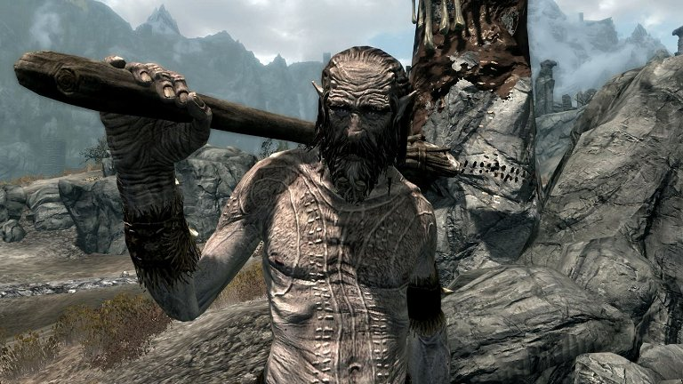

Curiosidades e Dicas de Skyrim
Skyrim foi lançado em 2011 mas continua suscitando a curiosidade e o fascínio em fãs por todo mundo. Dentro do game podemos encontrar vários easter eggs, referências e segredos que nenhum Dragonborn de verdade devia perder.
Confira os melhores que nós descobrimos e volte novamente à aventura pela região mais gelada de Tamriel!
-
Alduin o Devorador de Mundos
Alduin o Devorador de Mundos,é um poderoso dragão que governou Skyrim durante a Era Merethic. Adorado como um deus-rei pelos antigos Nords através do Dragon Cult, Alduin é por vezes considerado a "fonte" do Panteão Nord, bem como o prenúncio do apocalipse, e acredita-se ter um papel fundamental na reformulação do mundo.
-
Pescar Salmão

Os aficionados por alquimia em Skyrim sabem o quão difícil pode ser achar stron ovos de salmão (salmonroe). Esse ingrediente é usado em poções focadas em stamina e magicka mas também para permitir que você consiga respirar debaixo de água.
Os salmões que podem ser achados em águas pouco movimentadas como lagos não vão ter o ingrediente que você procura. Mas se for a cascatas ou rios com correntes fortes, você vai descobrir que esses peixes têm os tão desejados ovos na sua captura. Espere só que o salmão pule no seu nado contra as correntes e pesque-o!
Mas até a pesca do salmão tem outro segredo importante: os gritos do Dovahkiin. Se não quiser perder tempo tentando acertar no salmão no momento certo do seu pulo, use um shout de Unrelenting Force. Todos os salmões mortos com esse grito trazem ovos no seu inventário
-
Flechas Infinitas
Para os jogadores com personagens dedicadas ao arco e flecha, essa é uma dica que não podem perder. Nas povoações, esteja atento aos NPCs que estejam praticando sua mira nos alvos. Seja discreto e use o modo stealth para se aproximar do NPC e entrar no inventário dele. Roube todas as flechas que ele tem e coloque apenas uma sua de grande qualidade.
Saia do inventário dele e espere. A sua flecha vai se multiplicar por muitas outras e você só tem de ir ao alvo e coletá-las.
-
Gigante também chora
Quem nunca cometeu o erro de se aproximar demasiado de um gigante quando ainda era de um nível baixo? É assim que muitos jogadores conhecem pela primeira vez a força desses NPCs e aprendem a manter a sua distância deles. Mas existe um gigante muito diferente dos outros e é conhecido simplesmente como Mournful Giant (algo traduzido à letra como Gigante Triste ou Gigante Lúgubre).
Esse personagem especial pode ser encontrado a nordeste de Mistwatch, na região de Eastmarch. Você pode vê-lo nas termas naturais, olhando tristemente para o mamute morto nas águas. O Dragonborn pode se aproximar desse gigante e ele não o atacará, ficando apenas olhando para o amigo que perdeu.
Os mamutes são muito importantes para os gigantes, sendo animais domesticados por eles e com quem compartilham uma ligação única. São momentos como esse que mostram a atenção ao detalhe de um mundo tão grande como o de Skyrim.